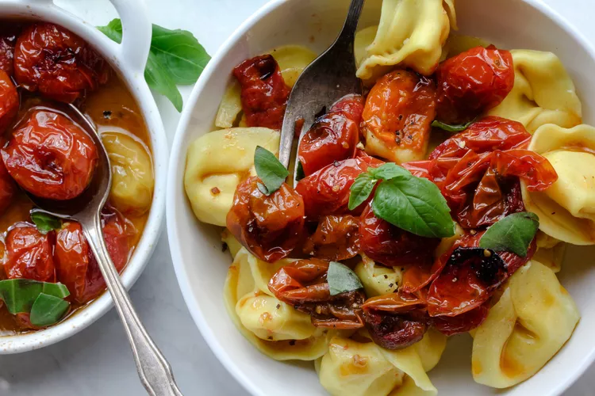

Chicken Tortellini with Tomatoes

This is a "sauceless" Tortellini pasta dish. It only has a few ingredients and
is incredibly easy to make.
My wife and I make it on the week days where neither of us want to cook. If you're
feeling particularly lazy (like we do) you can use a disposable pan to only have
one or two dishes to wash once you're done.
Ingredients
- 2 pints of cherry tomatoes (or two medium containers)
- Extra-virgin olive oil
- Salt and Pepper
- 1 pound of Tortellini
- Basil
Steps
- Preheat oven to 425 degrees fahrenheit.
- Place the tomatoes into the shallow dish or pan.
- Add oil, salt, pepper, and basil until all the tomatoes have been coated.
- Roast on 425 for 25 minutes. Then reduce oven temp to 200 and continue cooking for another 15 minutes.
- After starting the last 15 mins boil a pot of water and cook tortellini according to the package.
- After taking tomatoes out of the oven add the drained tortellini to the pan. Enjoy!